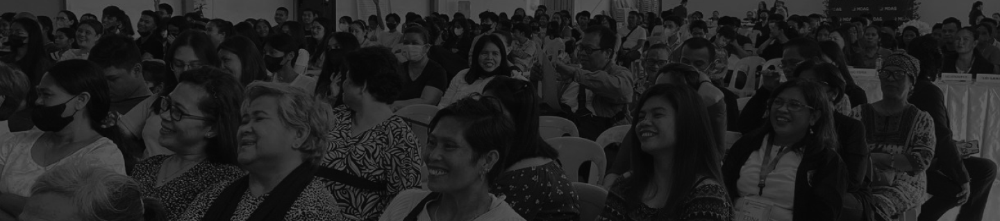

STATEMENT OF BELIEFS
Need Prayer?
OUR LEADERSHIP
See our churches statement of beliefs as we strive to live out the whole
gospel.
Find out more about our church system.

ABOUT US
We are a community of believers committed first to God and His word, and then to
one another in fellowship of the church. With the freedom of grace and the
scriptural ambition to "go and make disciples" (Matt 28:18) we aim to accomplish
this by meeting together in a variety of settings throughout Philippines and the whole world.
Whether you are looking for one-on-one bible studies, small group studies, devotionals or a Sunday service we hope you find a way to connect.
Whether you are looking for one-on-one bible studies, small group studies, devotionals or a Sunday service we hope you find a way to connect.
There are times when life is overwhelming, and all we have are questions. In
those moments, hope can feel far away. The great thing about prayer is that
it shifts our perspective toward the One who stands ready to listen. No
matter what you’re facing, we’d love to pray with you!
A church is a community where individuals come together to worship, grow in
faith, and support one another in their spiritual journey. It provides a
place for prayer, teaching, and fellowship, helping people connect with God
and each other. A church is essential for nurturing spiritual growth,
offering guidance, and making a positive impact on the community and the
world. Whether you're seeking purpose, healing, or a place to belong, a
church offers the support and foundation needed for a fulfilling life in
Christ.
NEED A CHURCH?
Mount Olive Worship Center Assembly of God is a bona fide member of PGCAG.
MOWCAG

0939 393 6270
Socials
Contact Us
Address
Blk 1 Lot 23 St. Michael street Townsite Subd. Sampaloc, Tanay, Philippines
1980